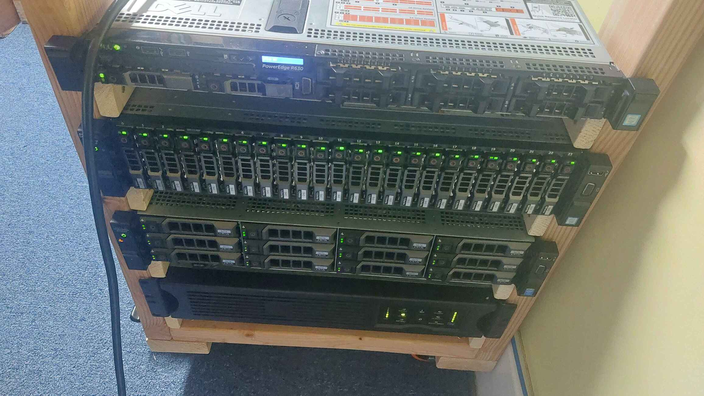
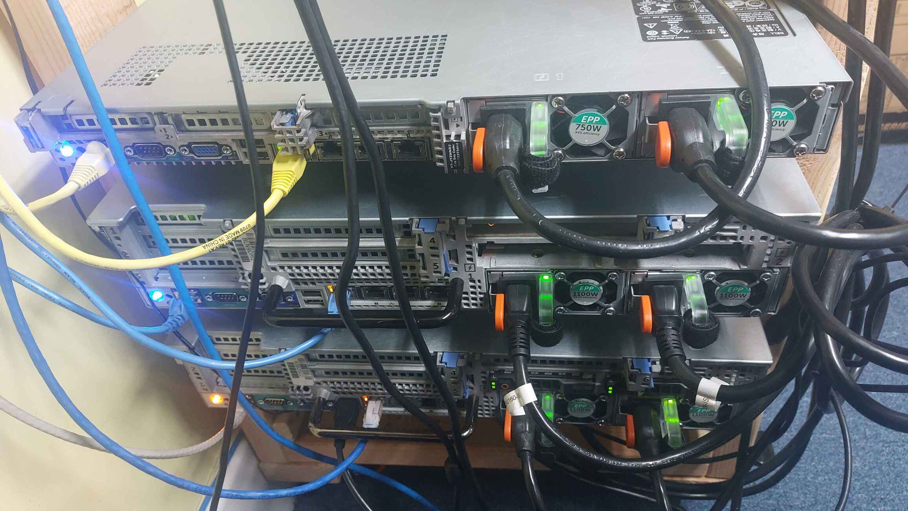
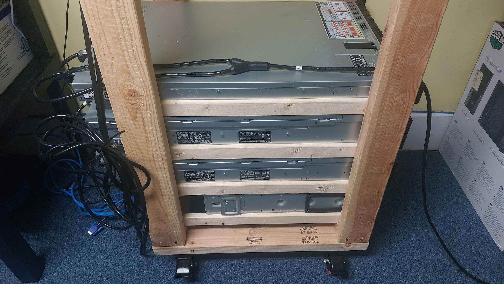

This page describes my janky homelab setup. Someone has to pay the power bill for this thing... (over 100$/month)
Some of my servers are on a wooden rack that I designed and built myself. The rack has a cheap 8 port gigabit switch which is connected to a router. I also have a APC Smart UPS SUA1500RM2U on the bottom of the rack to power the most important equipment.
My primary interest with homelabbing is high performance computing (HPC). I also like learning how to configure and run my own services.
Starting in 2025, I moved to New Mexico for a new job, and have my homelab split across two locations, identified by ABQ (Albuquerque, New Mexico) and NJ (my previous location).
I give all my servers character names to identify them.
Tohka (NJ, main server, June 2024 – present)
Named after a character in the anime Date A Live. This server is a central location for data storage and self-hosted services.
- Dell PowerEdge R730xd LFF
- 1x Intel Xeon E5-2667 v4 (8C/16T 3.2GHz)
- 64GB (4x 16GB) PC4-2400T-R memory
- 12x 14TB SAS HDD in ZFS RAIDZ2
- 2x 1.6TB SAS SSD for OS
- Dell PERC H730p Mini
- 2x 1100W power supplies
- Ubuntu Server 24.04
Yuuka (ABQ, compute server, June 2024 – present)
Named after Yuuka from the mobile game Blue Archive which also has an anime adaptation. This server was built for high disk speed to enable faster trillion digit computations with y-cruncher.
- Dell PowerEdge R730xd SFF
- 2x Intel Xeon E5-2697A v4 (32C/64T 2.6GHz)
- 256GB (16x 16GB) PC4-2400T-R memory
- Dell PERC H730 mini
- 26x 1.2TB 10KRPM SAS HDD
- 1TB PCIe NVMe SSD
- 2x 1100W Power Supplies
- Ubuntu Server 24.04
Riri (ABQ, compute server, Oct 2025 – present)
Named after Riri Hitotsuyanagi, a character from Assault Lily, which is a mixed media franchise that has an anime that aired in 2020 and a game which has since ended service for its global version.
- Dell PowerEdge R630
- 2x Intel Xeon E5-2673 v4 (20C/40T 2.2GHz)
- 128GB (8x 16GB) PC4-2133P-R memory
- 1x 160GB Intel SATA SSD
- 2x 750W Power Supplies
- Arch Linux
Yuyu (ABQ, compute server, Oct 2025 – present)
Named after Yuyu Shirai, a character from Assault Lily, which is a mixed media franchise that has an anime that aired in 2020 and a game which has since ended service for its global version.
- Dell PowerEdge R630
- 2x Intel Xeon E5-2673 v4 (20C/40T 2.2GHz)
- 256GB (16x 16GB) PC4-2133P-R memory
- 1x 160GB Intel SATA SSD
- 2x 750W Power Supplies
- Arch Linux
Laptop "cluster" (ABQ, Oct 2025 – present)
A grouping of three laptops. It was supposed to be five, but one has a fatal graphics issue preventing its use and the other has a forgotten BIOS password preventing the installation of Linux so it was instead given to a family member. I obtained four Dell Precision laptops from an old laptop giveaway, two of which are in this cluster, one of which was given to a family member, and the remaining one became my new main laptop.
- Lenovo ThinkPad E490 (takina)
- Named after Takina Inoue, a main character in the anime Lycoris Recoil.
- Intel i5-8265U, 1x 16GB DDR4, 160GB SSD, Arch Linux
- Repurposed from my previous main laptop which was named after Yue, a character in the anime Arifureta Shokugyou de Sekai Saikyou (Arifureta: From Commonplace to World's Strongest)
- Dell Precision 7510 (iroha)
- Named after Kazama Iroha, a member of hololive.
- Intel i7-6820HQ, 2x 16GB DDR4, 160GB SSD, Arch Linux
- Dell Precision 7520 (sora)
- Named after Tokino Sora, a member of hololive.
- Intel i7-7820HQ, 2x 16GB DDR4, 160GB SSD, Arch Linux
Setsuna (NJ, compute server, Aug 2024 – present)
Named after Setsuna Yuuki from the anime Love Live Nijigasaki Gakuen School Idol Doukoukai. This server was obtained from a very good deal.
- HP Proliant DL580 G9
- 4x Intel Xeon E7-8890 v4 (96C/192T 2.2GHz)
- 1TB (32x 32GB) PC4-2400T-R memory (runs at 1600MHz)
- 500GB NVMe SSD for OS
- 1x 3.84TB SAS SSD
- 4x 1200W Power Supplies
- Ubuntu Server 24.04
Kurumi (NJ, compute server, July 2023 to present)
Primarily named after Kurumi, the hacker character in the anime Lycoris Recoil. Also happens to be the same name as Kurumi from the anime Date A Live. This is a server I use for heavy computing with low memory requirements.
- Dell PowerEdge R630
- 2x Intel Xeon E5-2698 v4 (40C/80T 2.2GHz)
- 128GB (8x 16GB) PC4-2400T-R memory
- 500GB SATA SSD
- Dell PERC H330
- 2x 750W Power Supplies
- Ubuntu Server 24.04
Komari (NJ, compute server, Jan 2024 to present)
Named after Terakomari Gandesblood from the anime Hikikomari Kyuuketsuki no Monmon (The Vexations of a Shut-In Vampire Princess). This is a server I use for heavy computing with high memory requirements.
- Dell PowerEdge R630
- 2x Intel Xeon E5-2698 v4 (40C/80T 2.2GHz)
- 256GB (8x 32GB) PC4-2400T-R memory
- Dell PERC H730
- 1TB PCIe NVMe SSD
- 2x 750W Power Supplies
- Ubuntu Server 24.04
Rimuru (NJ, storage server, decommissioned, July 2022 – 2024)
Named after the main character in the anime Tensei Shitara Slime Datta Ken (Tensura). Previously a central location for data and self-hosted services. Has since been decommissioned and replaced with a Dell R730xd LFF
- Dell PowerEdge R720xd LFF
- 1x Intel Xeon E5-2643 v2 (6C/12T 3.5GHz)
- 64GB (2x 32GB) PC3-10600R memory
- 12x 8TB SAS HDD in ZFS RAIDZ2
- Dell PERC H310 (flashed to IT mode)
- 1TB PCIe NVMe SSD for OS
- 2x 750W Power Supplies
- Ubuntu Server 22.04
Lacia (NJ, compute server, decommissioned, July 2020 - June 2024)
Named after the character Lacia in the anime Beatless. This used to be the central server for my data and services, then became a place for some heavy computing. Considering its age, I have decided to decommission this server from my homelab in favor of better performance on newer hardware.
- Dell PowerEdge R720 LFF
- 2x Intel Xeon E5-2697 v2 (24C/48T 2.7GHz)
- NVidia Tesla P100 16GB GPU
- 512GB (16x 32GB) PC3L-10600R memory
- 8x 4TB SATA HDD
- Dell PERC H710 (flashed to IT mode)
- 1TB PCIe NVMe SSD for OS
- 2x 750W Power Supplies
- Ubuntu Server 22.04
Shirase (NJ, test server, decommissioned, 2020 to 2022)
Named after the main character from the anime Battle Programmer Shirase (BPS). This is one of the servers I used to begin my homelabbing with enterprise hardware. I found this one in recycling while I was working on my Bachelor's degree at RPI.
- IBM System x3530 M4
- 250GB SATA SSD
- 12GB (2x2GB + 2x4GB) PC3-10600E memory
- Intel Core i3-4170 (2C/4T 3.7GHz)
- 2x460W Power Supplies
Pictures
  Page last updated: 2025-11-30
Back to the home page